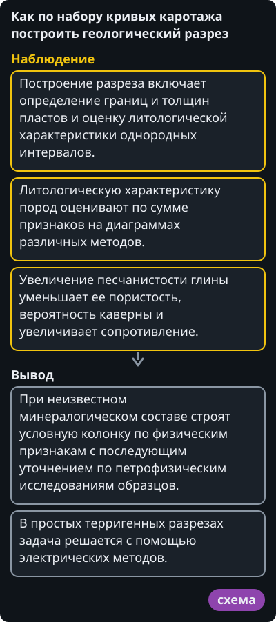
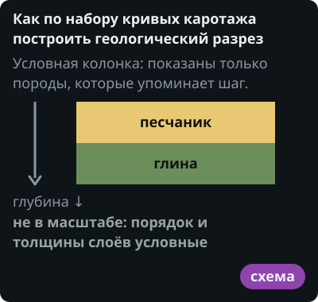

Шаг 3 из 3 · ≈ 8 мин · стр. 92–105
Как по набору кривых каротажа построить геологический разрез
Построение литологического разреза и расчет эффективной толщины
Опирается на Какие бывают породы-коллекторы и какими приборами их изучают
Прогресс шага: 0 из 2
из книги (слова автора) пересказ ИИ гипотеза
Пересказ проверен по странице книги — нажмите «стр. N».
Сначала угадай
«Кривая каротажа напрямую определяет литологию породы, поэтому для построения разреза не нужны справочные таблицы и привязка к керну.» пересказ
Как думаешь: это верно?
СовпалоНе совпало: на самом деле это верно.на самом деле это неверно.
Кривая каротажа не равна напрямую литологии: физические признаки общие, поэтому требуются таблицы признаков, количественная интерпретация и привязка к керну.
Понять
Суть
Построение разреза включает определение границ пластов и оценку литологии по комплексу геофизических методов с учетом табличных признаков. Эффективная толщина пласта рассчитывается с учетом прослоев неколлекторов и характера насыщения. пересказ
Зачем этот шаг
Этот шаг опирается на классификацию методов и признаков пород, переходя к практической процедуре построения разреза и интерпретации таблиц. пересказ
Как это работает
Физические признаки пород часто общие для разных отложений. Литологию оценивают по сумме признаков с помощью справочных таблиц. Слоистые коллекторы рассчитываются через интегральные характеристики пачки по уравнениям связи сопротивлений или палеткам относительных амплитуд СП. пересказ
Разбор примеров из главы
Условие. Расчет относительной по толщине глинистости пачки и эффективной толщины слоистого глинистого коллектора по уравнению (63) и (64).
- Определить удельное сопротивление пачки ρ_n по диаграммам БЭЗ или фокусированных методов.
- Задать удельные сопротивления прослоев продуктивного коллектора ρ_nm и глины ρ_cn.
- Решить уравнение (63) относительно относительной глинистости χ_cn.
- Вычислить эффективную толщину пачки по формуле (64).
Итог. Получена формула расчета эффективной толщины слоистого коллектора через интегральные характеристики удельного сопротивления. пересказ
Иллюстрации


В данных
Что это значит для данных
Комбинация кривых сопротивления, СП, гамма-метода и нейтронных методов позволяет выделять литологию и рассчитывать эффективные толщины. пересказ
При наличии переходных зон или слоистой глинистости качественный визуальный анализ дает ошибку, требуя номограммы и уравнения связи. пересказ
Автоматический классификатор литологии по единичному методу без учета комплекса и минерализации раствора даст сбой. гипотеза
Решение на данных
Если комплекс признаков соответствует табличным значениям и нет аномалий, интервал относится к данному литотипу для определения толщины. пересказ
Сигнал
- диаграммы сопротивления
- метод СП
- микрозонды
- гамма-метод
- нейтронные методы
Правило
Если комплекс признаков по кривым соответствует табличным значениям для определенной породы и отсутствуют аномальные факторы переходных зон, интервал относится к данному литотипу.
Вывод
Выделение литологического типа породы и эффективной толщины пласта.
Шаг 1 из 3: признаки
Контрпример. Увеличение песчанистости глины или появление глинистого материала в песчанике меняет сопротивление и СП, приводя к ложной интерпретации при использовании только одного метода.
пересказ
Аналогия
Ансамбль моделей классификации объединяет разные признаки: отдельный метод дает неопределенность, а их взвешенная комбинация позволяет классифицировать объект. пересказ
В отличие от ИТ-признаков, геофизические сигналы жестко связаны физическими законами фильтрации и емкости пород. пересказ
Как делает специалист
Специалист сопоставляет диаграммы геофизических исследований скважин, определяет границы пластов и выбирает опорные значения. Затем он вычисляет глинистость и параметры толщины с помощью расчетных формул и номограмм. пересказ
Частая ошибка
Кривая каротажа не равна напрямую литологии: физические признаки общие, поэтому требуются таблицы признаков, количественная интерпретация и привязка к керну. пересказ
Проверить себя
Задания
Задание 1 на данных
Какие изменения на диаграммах происходят при увеличении глинистого материала или песчанистости?
Правильный ответ: Повышение глинистого материала в нефтенасыщенном песчанике значительно снижает сопротивление.; Повышение содержания глинистого материала в нефтенасыщенном песчанике уменьшает амплитуду СП.; Увеличение песчанистости глины увеличивает сопротивление.
Присутствие глины меняет физические свойства пород, уменьшая СП и сопротивление в песчаниках.
Задание 2 узнавание
В тех случаях, когда совершенно неизвестны ни минералогический состав, ни литологическая характеристика пород, следует строить расчленения разреза по физическим признакам, которую затем уточняют по данным петрофизических исследований образцов.
Правильный ответ: условную колонку
При неизвестном составе строят условную колонку по физическим признакам.
Задание 3 понимание
Расположите этапы построения литологического разреза в порядке их логического выполнения при неизвестном минералогическом составе.
- Определение границ и толщин отдельных пластов по диаграммам методов
- Оценка литологической характеристики выделенных интервалов по сумме признаков
- Уточнение разреза по данным петрофизических исследований образцов
- Построение условной колонки расчленения разреза по физическим признакам
Правильный ответ: Определение границ и толщин отдельных пластов по диаграммам методов → Оценка литологической характеристики выделенных интервалов по сумме признаков → Построение условной колонки расчленения разреза по физическим признакам → Уточнение разреза по данным петрофизических исследований образцов
Сначала находят границы пластов, затем оценивают литологию, строят условную колонку и уточняют её по керну.
Задание 4 перенос
Рассчитайте эффективную толщину пласта h_fl (в метрах), если общая толщина мощного пласта коллектора составляет 18.0 м, а сумма толщин прослоев неколлектора равна 2.2 м.
м
Правильный ответ: 15,8 м (±0,158)
Эффективная толщина равна разности полной толщины пласта и суммы толщин прослоев неколлектора.
Задание 5 на данных
Каким образом определяется суммарная эффективная толщина тонкослоистого коллектора со слоистой глинистостью?
Правильный ответ: Расчетным путем по интегральным характеристикам пачки в целом.
В тонкослоистых пачках прослойки не выделяются приборами, поэтому толщину считают по интегральным характеристикам пачки.
Чек-лист шага
Глубже
Нюансы
Показать Скрыть — нюансы
При неизвестном составе строят условную условная колонка расчленения разреза по физическим признакам с уточнением по керну. Переходные зоны усложняют интерпретацию и требуют количественного подхода с привлечением геологических сведений. пересказ
Цитаты автора
Показать Скрыть — цитаты автора
Построение разреза включает определение границ и толщин пластов и оценку литологической характеристики однородных интервалов.
Построение разреза включает две операции: определение границ и толщин отдельных пластов и оценку литологической характеристики выделенных однородных интервалов.Автор, стр. 92
Литологическую характеристику пород оценивают по сумме признаков на диаграммах различных методов.
Литологическую характеристику пород оценивают по сумме признаков, выявленных на диаграммах различных методов.Автор, стр. 92
При неизвестном минералогическом составе строят условную колонку по физическим признакам с последующим уточнением по петрофизическим исследованиям образцов. вывод
в тех случаях, когда совершенно неизвестны ни минералогический состав, ни литологическая характеристика пород, следует строить условную колонку расчленения разреза по физическим признакам, которую затем уточняют по данным петрофизических исследований образцовАвтор, стр. 92
Увеличение песчанистости глины уменьшает ее пористость, вероятность каверны и увеличивает сопротивление.
увеличение песчанистости глины может привести к уменьшению ее пористости и вероятности образования против нее каверны, увеличению сопротивленияАвтор, стр. 92
Повышение глинистого материала в нефтенасыщенном песчанике уменьшает амплитуду СП и снижает сопротивление.
Повышение содержания глинистого материала в нефтенасыщенном песчанике приводит к уменьшению амплитуды СП и значительному снижению сопротивления.Автор, стр. 92
В простых терригенных разрезах задача решается с помощью электрических методов. вывод
Например для терригенного разреза, в котором плотные, слабоглинистые карбонатные разности пород имеют подчиненное значение, задача может быть достаточно хорошо решена с помощью одних лишь электрических методов.Автор, стр. 95
Сложные разрезы со смешанными породами и флюидами требуют количественной интерпретации с геологическими сведениями. вывод
построение разреза и особенно выделение коллектора можно осуществить лишь на основании количественной интерпретации геофизических данных с привлечением геологических сведений о характере разреза.Автор, стр. 95
Гидрохимические отложения выделяются методами рассеянного гамма-излучения и акустическим.
При построении разрезов скважин, вскрывающих гидрохимические отложения, большую роль играют методы рассеянного гамма-излучения и акустический, которые позволяют выделить гипсы, ангидриты, известняки и соли по характерным для них константамАвтор, стр. 95
Толщина однородного пласта определяется по диаграммам с учетом правил границ пласта.
Толщину однородного продуктивного пласта-коллектора определяют по диаграммам геофизических методов с учетом правил определения границ пластаАвтор, стр. 100
Эффективная толщина пласта с прослоями неколлекторов определяется как разность полной толщины и суммы толщин неколлекторов. вывод
В мощном пласте коллектора, однородном по характеру насыщения, но содержащем прослои неколлектора, эффективная толщина h,ф определяется как разность толщин всего пласта h и суммы толщин прослоев неколлектора Σhпл: h,ф = h - Σhпл.Автор, стр. 101
Суммарная эффективная толщина тонкослоистого коллектора находит расчетным путем по интегральным характеристикам пачки. вывод
в пачке, представленной чередованием тонких прослоев коллектора и глины (глинистый коллектор со слоистой глинистостью), отдельные прослои неколлекторов не выделяются даже по данным методов с максимальной разрешающей способностью по вертикали (микроэлектрические методы), поэтому суммарную эффективную толщину h,ф2 продуктивного коллектора в этом случае находят расчетным путем по интегральным характеристикам пачки в целом.Автор, стр. 101
Новые понятия
Показать Скрыть — новые понятия
- литологическая колонка
- физические признаки пород
- литологический разрез
- условная колонка расчленения
- эффективная толщина
- слоистая глинистость
Используются: геофизические исследования скважин, промывочная жидкость, глинистый раствор, зона проникновения, глинистая корка, репрессия, минерализация фильтрата, терригенный разрез, карбонатный разрез, межзерновой коллектор, трещинный коллектор, метод СП, гамма-метод
Задачи из книги
Показать Скрыть — задачи из книги
Задача 90. Построить литологическую колонку на основании диаграмм комплекса методов, приведенных на рис. 14, 58. Дать объяснение, какие группы методов дают информацию о границах плотных пород, коллекторов, глин. Какие методы позволяют выделить интервалы повышенной пористости? Какие методы дают возможность судить о продуктивности выделенных коллекторов? Какими исследованиями необходимо располагать, чтобы точно установить, имеются ли в разрезе газоносные коллекторы? пересказ
Нужен рисунок: рис. 14, 58
Задача 91. Построить литологическую колонку на основании диаграмм комплекса методов, изображенных на рис. 68. Отметить интервалы, в которых интерпретация не является однозначной. пересказ
Нужен рисунок: рис. 68
Задача 96. Привести примеры сложных продуктивных пластов с прослоями неколлекторов всех типов, пользуясь рисунками, приведенными в настоящем руководстве. пересказ
Задача 97. Определить эффективную толщину продуктивного коллектора с учетом прослоев неколлектора; дать характеристику прослоев неколлектора и признаков, по которым они выделяются на примере рис. 68, 73, 76. пересказ
Нужен рисунок: рис. 68, 73, 76
Задача 98. Определить эффективную толщину тонкослоистого газоносного коллектора по диаграммам БЭЗ и СП (рис. 73). Выбрать интервалы для определения удельного сопротивления глин и чистого коллектора, максимальной статической амплитуды СП в данном разрезе. В связи с трудоемкостью обработки данных БЭЗ в слоистом коллекторе считать ρ_max ≡ ρ_sn. пересказ
Нужен рисунок: рис. 73
Задача 99. Рассчитать глинистость χ_cn глинистого слоистого продуктивного коллектора, если ρ_cn = 2 Ом·м, среднее удельное сопротивление пачки 4,4 Ом·м, пористость наиболее чистых прослоев песчаника 26%, удельное сопротивление вод в пластовых условиях 0,03 Ом·м, коэффициент газонасыщения достигает 88%. Определить эффективную толщину пласта, если общая толщина пачки 28 м. пересказ
Задача 100. Определить эффективную толщину 18-метровой толщи продуктивного коллектора, содержащего прослои глин и плотных пород с неактивным цементом, если удельные сопротивления плотных разностей 38 Ом·м, глин 2,2 Ом·м, продуктивных коллекторов 25 Ом·м. пересказ
Источник
Показать Скрыть — источник
Каждое утверждение шага — со страницей PDF и дословной цитатой. Нажми «стр. N», чтобы сверить по книге.
- Построение разреза включает определение границ и толщин пластов и оценку литологической характеристики однородных интервалов.
- Литологическую характеристику пород оценивают по сумме признаков на диаграммах различных методов.
- При неизвестном минералогическом составе строят условную колонку по физическим признакам с последующим уточнением по петрофизическим исследованиям образцов.
- Увеличение песчанистости глины уменьшает ее пористость, вероятность каверны и увеличивает сопротивление.
- Повышение глинистого материала в нефтенасыщенном песчанике уменьшает амплитуду СП и снижает сопротивление.
- В простых терригенных разрезах задача решается с помощью электрических методов.
- Сложные разрезы со смешанными породами и флюидами требуют количественной интерпретации с геологическими сведениями.
- Гидрохимические отложения выделяются методами рассеянного гамма-излучения и акустическим.
- Толщина однородного пласта определяется по диаграммам с учетом правил границ пласта.
- Эффективная толщина пласта с прослоями неколлекторов определяется как разность полной толщины и суммы толщин неколлекторов.
- Суммарная эффективная толщина тонкослоистого коллектора находит расчетным путем по интегральным характеристикам пачки.